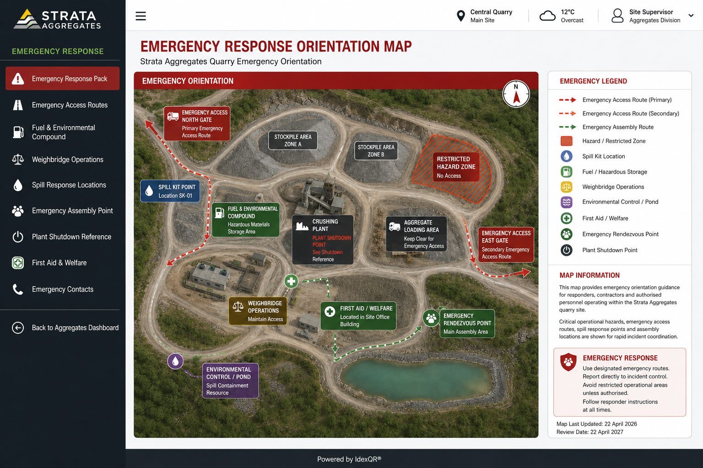

Raise the Alarm
First actionMake the incident visible quickly. Confirm location, incident type, immediate danger and whether emergency services are required.
Hold / Strata Aggregates / Emergency Response
Point-of-need incident response for alarm raising, evacuation, access, escalation and live controls during serious site incidents.
Immediate responseKey operational guidance can be provided in approved workplace languages so staff, contractors and visitors can understand instructions at the point of need.
Safety note: Safety-critical wording should be controlled and approved before use.
Open this map to view emergency access routes, muster points, restricted areas and response locations before taking action.

Make the incident visible quickly. Confirm location, incident type, immediate danger and whether emergency services are required.
Escape routes, emergency exits and site routes should remain clear, direct and available for immediate use.
Confirm the correct muster point or safe area depending on incident type, wind direction, spill path, traffic movement and site conditions.
Fire, explosion risk, fuel ignition or hot works incidents require immediate escalation and clear separation from fuel, plant and public access areas.
Fuel, oil, hydraulic fluid or chemical spills should be reported quickly. Contain only if safe and if trained to do so.
Confirm casualty location, injury type, access route and whether first aiders or emergency services are required.
Heavy plant movement, vehicle collision, overturned equipment or trapped access routes should be escalated with location and access details.
Waterways, drains, runoff routes, protected habitats and spill pathways may need immediate protection during emergency response.
Keep access clear for emergency services. Include gate, barrier, route, escort and contact visibility where relevant.
Show who needs to be contacted for site control, environmental response, maintenance, first aid, security and operational management.
Temporary route closures, restricted areas, heavy plant warnings, fuel transfer activity and emergency diversions should be visible during response.
Emergency situations do not always match the plan. Keep a clear route for reporting what the system did not predict.
Alarm route opened. Confirm exact location, incident type, immediate danger, people affected and whether emergency services are required.
First-aider request opened. Confirm casualty location, injury type, safe access route and whether emergency services are also needed.
Spill or leak report opened. Identify material, source, pathway, drains or water exposure, and contain only if safe and trained.
Blocked-route report opened. Capture the route, blockage type, affected evacuation or access path and any diversion needed.
Emergency access support requested. Confirm gate, barrier, route, escort, contact point and responder rendezvous visibility.
Plant incident report opened. Confirm asset, location, collision or overturn risk, trapped route, isolation need and safe access details.
Environmental response requested. Check waterways, drains, runoff routes, protected habitats, spill pathways and immediate protection needs.
Other emergency issue opened. Capture what the response plan did not predict and the judgement, support or escalation needed now.
Language support placeholder. Approved translated guidance would appear here in a live Hold deployment.